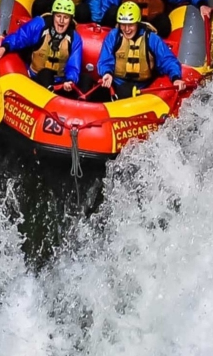
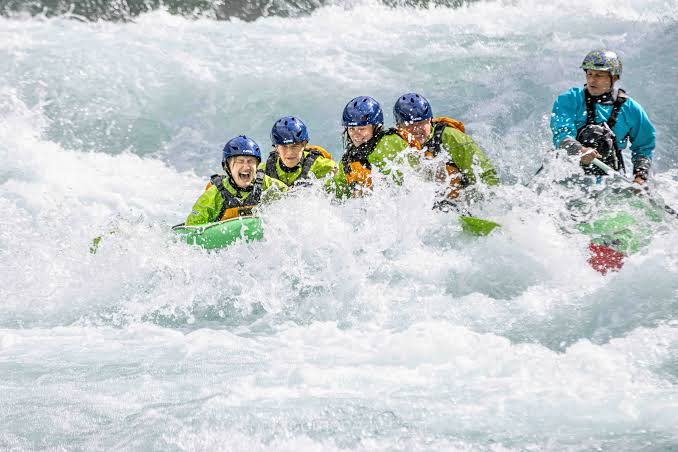

Have Questions? Want to Book?
Contact us today to reserve your spot on the river!
Contact Us
Half-Day Beginner Float
Duration: 3 Hours
Difficulty: Easy (Class I-II)
Perfect for families and first-timers. Enjoy a gentle float with stunning views.

Full-Day Canyon Run
Duration: 6 Hours
Difficulty: Moderate (Class III)
Get your adrenaline pumping with exciting rapids and a riverside lunch.

Extreme White Water
Duration: 8 Hours
Difficulty: Hard (Class IV-V)
For experienced rafters only. Navigate the most intense rapids in the region.
Available Trips Overview
| Trip Name | Duration | Difficulty | Price |
|---|---|---|---|
| Half-Day Beginner Float | 3 Hours | Easy (Class I-II) | $45 |
| Full-Day Canyon Run | 6 Hours | Moderate (Class III) | $60 |
| Extreme White Water | 8 Hours | Hard (Class IV-V) | $85 |